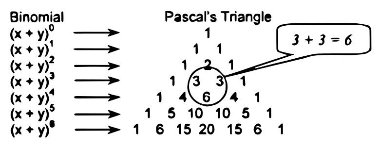

The general quadratic equation is expressed as:
$$a{x^2} + bx + c = 0$$
where a, b and c are real numbers and with $a \ne 0$. A quadratic equation in x is also known as a second-degree polynomial equation.
Quadratic formula:
$$x = {{ - b \pm \sqrt {{b^2} - 4ac} } \over {2a}}$$
Nature of roots:
The discriminant, ${b^2} - 4ac$ determines the nature of the roots of a quadratic equation.
When ${b^2} - 4ac = 0$, roots are real and equal (one root only)
When ${b^2} - 4ac > 0$, roots are real and unequal
When ${b^2} - 4ac < 0$, roots are imaginary and unequal
Properties of roots:
Let r1 and r2 be the roots of a quadratic equation.
When the two roots are added:
$${r_1} + {r_2} = {{ - b} \over a}$$
When the two roots are multiplied:
$${r_1}{r_2} = {c \over a}$$
Pure quadratic equation - is when b = 0. In such case, r1 = r2
Binomial is a polynomial or expression of two terms. When a binomial is raised to a certain power, the expansions are as follows:
$$\eqalign{
& {(x + y)^0} = 1 \cr
& {(x + y)^1} = x + y \cr
& {(x + y)^2} = {x^2} + 2xy + {y^2} \cr
& {(x + y)^3} = {x^3} + 3{x^2}y + 3x{y^2} + {y^3} \cr
& {(x + y)^4} = {x^4} + 4{x^3}y + 6{x^2}{y^2} + 4x{y^3} + {y^4} \cr} $$
... and so on
In the expansion of ${(x + y)^n}$, and as observed in the given expansions above, the following are the properties of a binomial expansion:
To express everything in general terms, the so-called Binomial Theorem was established and expressed as follows:
$${(x + y)^n} = {x^n} + n{x^{n - 1}}y + {{n(n - 1)} \over {2!}}{x^{n - 2}}{y^2} + \cdot \cdot \cdot + nx{y^{n - 1}} + {y^n}$$
Also, the coefficients of a binomial expansion can be conveniently obtained by arranging them in a triangular array or pattern. This is known as Pascal's Triangle, named after the famous French Mathematician Blaise Pascal (1623-1662).

Note: Any number in the Pascal's triangle is obtained by adding the two adjacent numbers above it. For example, the number 6 is obtained by adding 3 and 3.
Another way of determining the coefficient of any term in a binomial expansion is to use the following formula:
$$\text{Coeff. of any term} = {{(\text{Coeff. of P.T.})(\text{Power of x of P.T.})} \over {\text{Power of y of P.T.}+1}}\\ \text{where: P.T.}= \text{preceding term}$$
The rth term of the binomial expansion of ${(x + y)^n}$ may be calculated using the following formulas:
$$\eqalign{
& {r^{th}}\text{term} = {{(n)(n - 1)(n - 2)...(n - r + 2)} \over {(r - 1)!}}{x^{(n - r + 1)}}{y^{r - 1}} \cr
& {r^{th}}\text{term}{ = _n}{C_{r - 1}}{x^{(n - r + 1)}}{y^{r - 1}} \cr} $$
A term involving a variable with a specific exponent is obtained by using the following formula:
$${y^r} = {{n(n - 1)(n - 2)...(n - r + 1)} \over {r!}}{x^{n - r}}{y^r}$$
Sum of the coefficients of the expansion of ${(x + y)^n}$:
$$\text{Sum} = {(\text{Coeff. of }x + \text{coeff. of }y)^n}$$
Sum of exponents of the expansion ${(x + y)^n}$:
$$\text{Sum} = n(n + 1)$$
The term logarithm was derived from Greek words, "logus" meaning "ratio" and "aritmus" meaning "number". John Napier (1550-1617) of Scotland invented logarithm 1614. Napier used e = 2.718... for its base. In 1616, it was improved by a professor of geometry at Gresham College in London, Henry Briggs (1561-1630) using 10 as base.
Common logarithm ($\log_{10}$ or simply $\log$) is a logarithm using the decimal base 10. This is also known as Brigg's or Briggsian logarithm.
Natural logarithm ($\ln$) is a logarithm using the base e. This is also known as Napier's or Napierian logarithm in honor of Napier. The number, e is known as Euler's Number, named after the Swiss mathematician, Leonhard Euler (1707-1783) and is defined as,
$$e = \mathop {\lim }\limits_{n \to \infty } {\left( {1 + {1 \over n}} \right)^n}$$
Binary logarithm (denoted as $\text{lb}$) is logarithm with a base value of 2.
Since logarithm is an exponent, this illustrates that $\log_bx$ is the exponent to which b must be raised to obtain x. Therefore,
$$\log_216=4\ \text{may be written as}\ {2^4}=16$$
Properties of Logarithms:
$\log(xy)=\log x+\log y$
$\log {x \over y}=\log x - \log y$
$\log {x^n}=n\log x$
$\log_bx = {\log x \over \log b}$
$\log_ax = {\log_bx \over \log_ba}$
$\log_aa=1$
The natural logarithm can be converted into a common logarithm and vice versa. To obtain this, a factor known as the modulus of logarithms is necessary, such as
$$\log x=0.4343\ln x\ \ \ \ \ \text{also,}\ \ \ \ \ \ln x=2.3026\log x$$
Degree of a polynomial or equation - refers to the maximum sum of the exponents of the variables in any term of the polynomial.
What is the degree $3{x^4}y - 2{x^3}{z^4} + 7y{z^5}$?
Ans. 7, which is the sum of 3 and 4 of the second term.